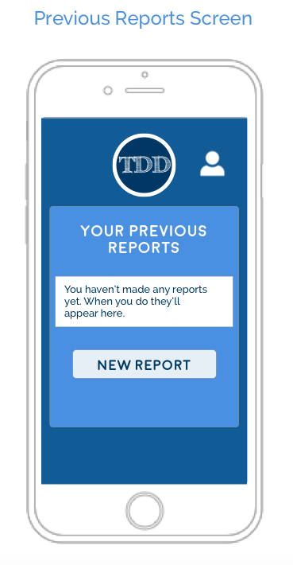

A Mobile App for The Doctor's Detectives
Introduction and Explanation
I'm learning about UX design and wanted to do a project that would allow me to go through the steps of brainstorming and creating something new. I watch the show Doctor Who* (if you're not familiar it's nerdy and about space and aliens and stuff!), so I decided to work on a project based on the show.
I’m treating this as a real situation, and since I wasn’t able to speak with actual users I referenced the show and the characters to determine what would be most useful.
Issue
There has been an increasing amount of alien activity on Earth (mostly focused in London), and the Doctor travels all over the Universe. He needs a simple way for Earthlings to report alien activity so he can keep track of what happens on Earth even when he isn't here.
Using a Mobile App
After listening to potential users I determined a mobile app would be the best way to submit reports. An app will allow users to report alien activity right after they've witnessed it, which could possibly allow for less biased reports. And the reports don't need to be large or long, so typing on an app shouldn't be too frustrating.
Users
Personas
Martha - Martha is 38 and married. She's a physician who used to travel with the Doctor. She currently works for UNIT (United Nations Intelligence Taskforce), which is an organization created to protect Earth from alien threats. She wants a place where she can view reports and get information about potential alien sightings.
Sally - Sally is 32 and in a relationship. She co-owns a store in London with her boyfriend and has had previous encounters with the Doctor and aliens. She would like a way to communicate with the Doctor if she has other encounters with alien life forms in the future. She's also a photographer, so she'd like a way to include photos with her submissions.
Elton - Elton is 40 years old, in a "complicated" relationship, and is a member of a group called LINDA (London Investigation 'n' Detective Agency). The members of LINDA have all heard of the Doctor and are actively on the lookout for alien activity. He wants a place to record alien activity, keep track of reports he's made, and read reports of sightings from other people.
Findings
After learning what the potential users wanted in an app there were three main categories that would be the most useful:
- a way to report alien activity
- a way to read other people's reports
- a way to keep track of previous submissions
These cover all of the bases without being overwhelming to a user, and leaves room for upgrades in the future if users think the app is missing important features.
Wireframes
I used Sketch to make the wireframes for the app. When speaking with users they seemed to associate the color blue with the Doctor (the Doctor's appearance changes but the TARDIS stays the same), so various shades of blue are used in the app. I went with a simple layout and large buttons - Sally and Martha said the app needed to be straightforward so a person who was in shock after an encounter would still be able to use it. The size will also make the app easier to use for people who aren't tech savvy and haven't used many apps before.
*Doctor Who is owned by the BBC (please don’t sue me!)
Go back to Kae's portfolio